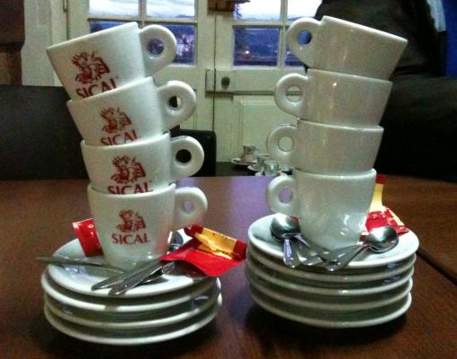

| Prev Next | OpenBSD and Rthreads | Slide #2 |
OpenBSD has used userspace threads since it split from NetBSD

Threads were implemented by stack switching when an operation would block or when a scheduling timer triggered
blocking I/O handled by doing non-blocking I/O and then polling in thread scheduler
| EuroBSDCon 2012 | Copyright © 2012 Philip Guenther |